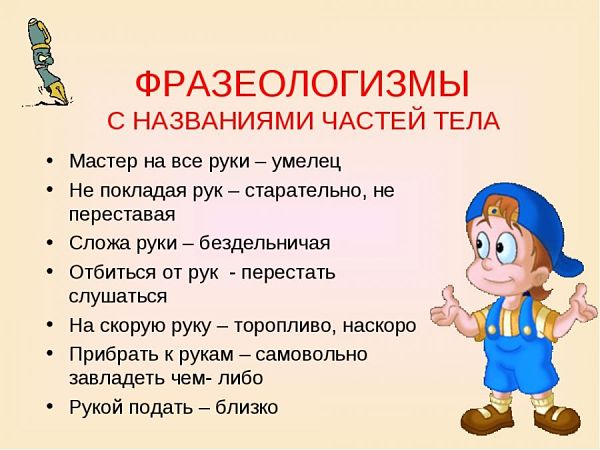
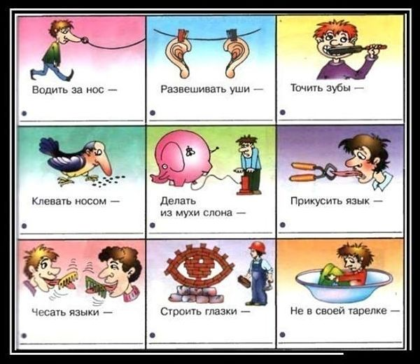
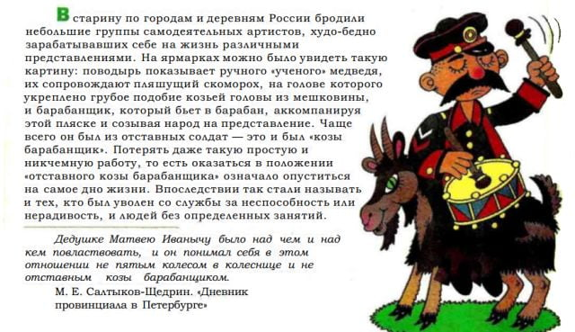
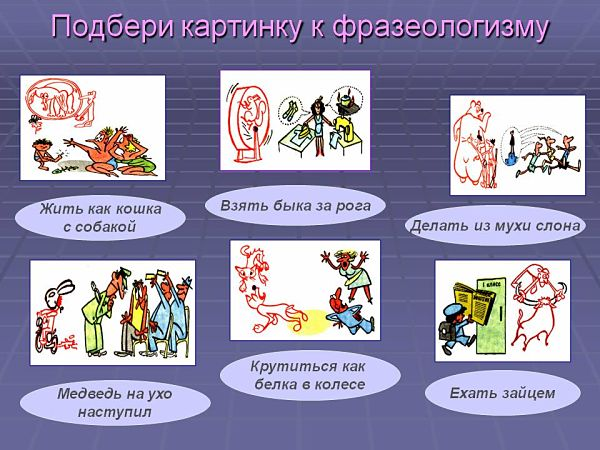

Фразеологизмы,что это?
Откуда появились фразеологизмы?
По происхождению одни фразеологизмы являются собственно русскими, другие — заимствованными.
Некоторые фразеологизмы заимствованы из старославянского языка: нести свой крест, соль земли, манна небесная, фома неверующий;
из мифов разных народов: авгиевы конюшни, прокрустово ложе.
Многие фразеологизмы оказываются сложными для понимания в силу их грамматического оформления, неясного значения слов, их составляющих.
Например: глас вопиющего в пустыне — призыв к чему-нибудь, остающийся без ответа;
камень преткновения — помеха, затруднение; тьма кромешная — полная, беспросветная темнота; мерзость запустения — состояние полного опустошения;
метать бисер перед свиньями — говорить о чём-нибудь, превышающем понимание слушателя; сизифов труд — бесконечная и бесплодная работа;
гомерический смех — неудержимый, громовой хохот; притча во языцех — предмет общих разговоров, сенсация; испить чашу до дна — испытать несчастье;
скользить по поверхности — не вникать глубоко во что-либо.
Для понимания значения фразеологизмов целесообразно обращение к фразеологическому словарю,допустим как словари:
Фразеологический словарь русского языка А.В Жуков.
Фелицына В.П., Мокиенко В.М. Русские фразеологизмы.
Бирих А.К., Мокиенко В.М., Степанова Л.И. Словарь русской фразеологии.
Фразеологизмы — единицы лексики
В лексике русского языка существуют не только отдельные слова, обозначающие реалии окружающей нас действительности,
но и спаянные словосочетания, которые называют фразеологизмами. Они являются такими же самостоятельными языковыми единицами, как и слова.
Фразеологизмы состоят не менее чем из двух слов, которые обозначают нечто единое по смыслу, например:
реветь белугой — рыдать, громко и безудержно плакать;
брать на буксир — передать свой опыт, умения, знания;подтянуть в учёбе;
задеть за живое — глубоко волновать, заставить переживать, оскорблять самолюбие;
играть в жмурки — обманывать кого-либо, утаивать истинные намерения.
Как видим, значение фразеологизма часто не вытекает из семантики каждого отдельного слова, входящего в его состав.
У фразеологизма нет общих признаков со свободным словосочетанием, Всякое словосочетание представляет собой сочетание лексем,
в котором они сохраняют свои признаки, тогда как компоненты фразеологизма утрачивают все признаки самостоятельного слова, кроме звукового облика:
лексическое значение, формы изменения, синтаксическую функцию. Связи и отношения между словами в составе фразеологизма тесные и спаянные.
Признаки фразеологизмов
Как самостоятельная лексическая единица языка, фразеологизмы имеют свои отличительные черты
1.В их составе насчитываются два и более слов,
например:
играть на нервах — намеренно раздражать, нервировать кого-либо;
шито белыми нитками — видна поддельность, искусственность чего-либо;
хвататься за соломинку — использовать любое, чаще сомнительное средство для выхода из трудной ситуации;
семь пятниц на неделе — о том, кто часто меняет свои планы;
биться как рыба об лёд — бороться с нуждой, бедствовать;
2.Фразеологизмы имеют устойчивый состав.
Это значит, что словосочетание нельзя искажать, вставлять в него новое слово или заменять одни слова другими,
так как фразеологизмы возникли в результате длительного народного творчества и за много веков их использования, как ограненные отшлифованные кристаллы,
приобрели свой четко обозначенный состав. Например, в устойчивом словосочетании «висеть в воздухе», что значит «оказаться в неясном, неопределенном положении»,
поменяем слова:
распространяться в воздухе (звуковая волна) ;
висеть на веревке.
В результате нашего языкового эксперимента фразеологизм рассыпался, как домик из кубиков, если вытащить один из них из этой детской постройки.
Глагол «висеть«, употребленный во вновь образованном словосочетании, потерял своё переносное значение, и фразеологизма больше не существует.

3.Воспроизводимость
Пожалуй, этот признак является одним из главных. Фразеологизмы не создаются каждый раз заново по воле говорящего,
а употребляются в речевой ситуации как готовые «кирпичики» для построения образной и выразительной речи.
"Будут ваши братцы при капитале! Будут.Вот только я так ни при чём останусь — это верно! Да, вылетел, брат, я в трубу! (М. Е. Салтыков- Щедрин) ".
"Брат украшал его сухое изложение деталями, настолько живописными, что председатель, начинавший уже успокаиваться, снова навострил уши (И. Ильф и Е. Петров)."
Ишь, стервец, завел шарманку, что ты, Петька, баба что ль? (А. Блок)."

4.Фразеологизмы имеют переносное значение, которое сложилось исторически.
Иногда переносное значение фразеологизма нельзя понять, не обратившись к истории его возникновения.
Например:
Устойчивое словосочетание «на козе не подъедешь» трудно понять многим, особенно иностранцам, изучающим русский язык. Что за коза и почему на ней нужно (не нужно) ездить?
Это устойчивое выражение связывают с речью шутов и скоморохов, которые, веселя народ на ярмарках и праздниках, рядились в козу, медведя, чёрта и пр. В их репертуаре была езда на козе или свинье.
Но на особо важных и угрюмых людей даже эта уловка не действовала: они даже не улыбались, глядя на такую народную забаву. С тех пор и говорят «на козе не подъедешь» о людях неприступных,
гордых, важных или крутого нрава.
Нет, брат, к нему не всякий суйся. Порой бывает такой крутой, что на козе не подъедешь (А. Бестужев-Марлинский).
И я дразнил Антона, что он будет учиться среди сплошных гениев и сам вообразит себя гением и тогда к нему и на козе не подъедешь (Л. Уварова).
А вот пример с объяснением происхождения фразеологизма «отставной козы барабанщик»:

Переносное значение фразеологизмов <кот наплакал>,что значит <очень мало>,как видим,совсем не вытекает из значения слов,его составляющих.
Некоторые исследователи считают,
что этот фразеологизм возник на базе фольклорной детской песенки:
"Идет кисоньки из кухни,
У ней глазоньки напухли.
-О чем,кисонька,ты плачешь?
-Как мне кисоньке не плакать:
Повар пеночку слизал,
А на кисоньку сказал!"
Сразу возникает встречный вопрос:а может ли кот плакать?Нет!Эта ситуация с плачущим котом -плод народной фантазии,которой подвластно все,даже плачущий кот и жук,
который может чихнуть(жук начхал)
Образность этого выражения можно рассматривать как литоту,основанное на невозможности кошкиного<кошкиного плача>.
5.Фразеологизмы являются одним членом предложением.
| Фразеологизмы | Значние |
|---|
| Тьма-тьмущая | Много |
| Ставить точку в споре | Закончить |
| Слово в слово | Точно |
| Во все лопатки | Быстро |
| Втирать очки | Обманывать |
В предложении фразеологизм не делится на части,а является целиком одним членом предложения.
"Сегодня мы работали до седьмого пота.
Мы(что делали?)работали до седьмогопота.
Фразеологизм"работали до седьмого пота"используется в роли сказуемого.
"Втречаются в жизни настолько близкие по духу люди,что про них говорят ,что они из одного теста сделаны.
Аналогично в этом предложении устойчивое словосочетание "из одного теста"является частью сказуемого.

Итак,фразеологизмы делают нашу речь образной и живой.Устойчивые словосочетания помогают нам передать большой смысловой объем и сделать это эмоционально и выразительно.
Они позволяют образно оценивать различные явления нашей жизни,эмоционально передать к ним свое отношение -осуждение,восхищение,иронию,пренебрежение и пр.
Примеры
Седьмая вода на киселе-очень дальнее,сомнительное родство;
Выходить сухим их воды-ловко избежать заслуженного наказания;
Носить воду решетом-делать что-то без видимого результата,напраснй труд;
Толочь воду в ступе-заниматься чем-то бесполезным;
Заврить кашу-начать хлопотное,иногда неприятное дело;
Козел отпущения(библ.)-человек,на которого сваливают чужую вину;
На живую нитку-недобросовестно,непрочно,кое-как;
Разводить турусы на колесах-вести пустые разговоры ,говорить чепуху вздор(турусы-осадные башни из бревен,которые перекатывались на низких и толстых деревянных колесах);
Закидывать удочку-пытаться что-либо выяснить,разузнать.